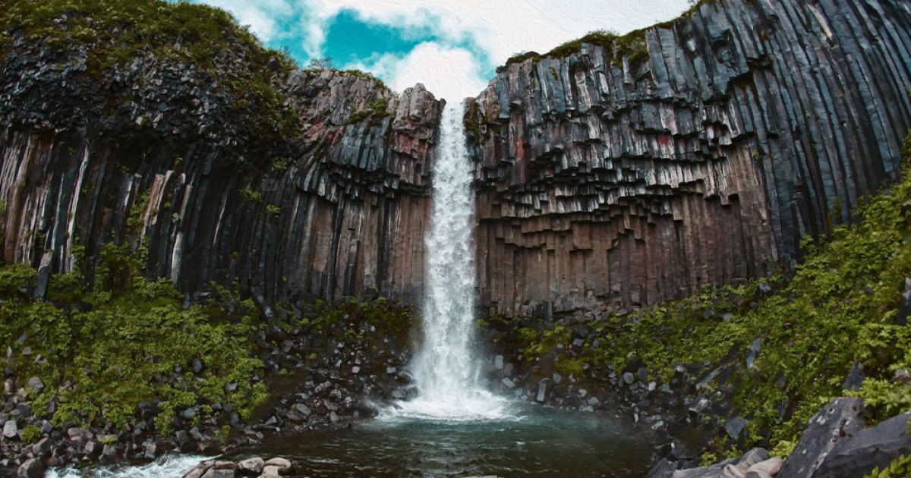
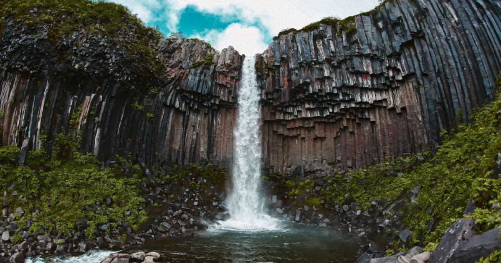
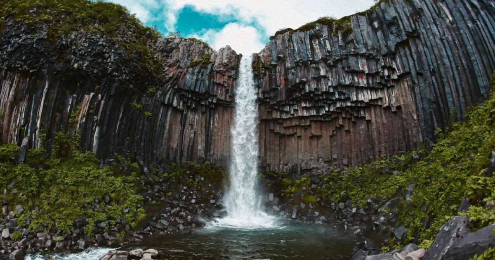
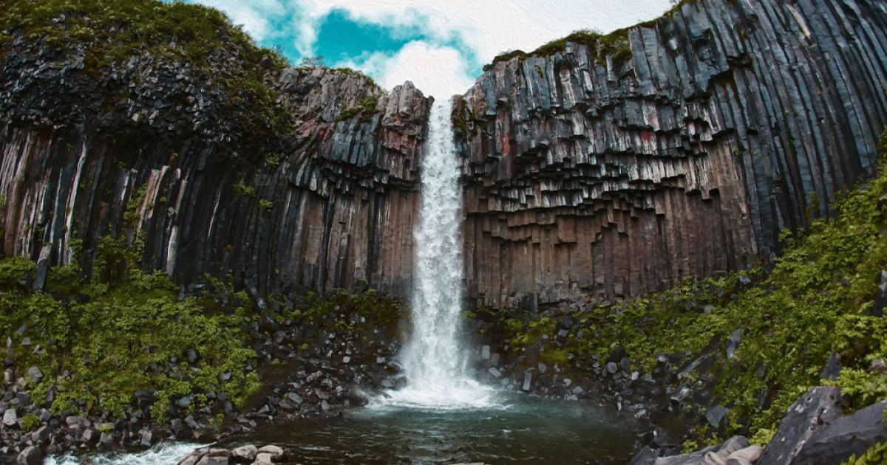

Цією пам’яткою природа довела свою неперевершеність майстра-архітектора. Вона запропонувала нам унікальну споруду із базальтових стовпів-багатогранників, що вишикувані стрункими рядами і вражають своєю монументальністю та стрункістю геометричних фігур.
А щоб глядач не втомився від одноманітності форм, йому представлена неперевершена скульптура базальтового віяла. І все це – в обрамленні філософського спокою кришталевої води. Хочете пересвідчитись, що таке є насправді і помилуватись чудом? Завітайте на Івано-Долинське родовище базальтів, що в селі Базальтове Костопільського району Рівненської області. Базальтові стовпи – різновид базальтів, що має в поперечному перерізі – форму від чотирьохгранних до семигранних. Товщина стовпів коливається в межах від 0,6 до 1,2м. Переважають із товщиною 0,8-1,0м. Висота – від 3-х до 30м. Мають властивість давати прямий рівний розкіл.
Базальтові стовпи – різновид базальтів, що має в поперечному перерізі – форму від чотирьохгранних до семигранних. Товщина стовпів коливається в межах від 0,6 до 1,2м. Переважають із товщиною 0,8-1,0м. Висота – від 3-х до 30м. Мають властивість давати прямий рівний розкіл.
Заказник є комплексним: стратиграфічний, петрографічний, мінералогічний, палеовулканічний, розташований на західному схилі Українського кристалічного щита. Загальна протяжність відслонень базальтів у межах заказнику 180—230м. Також на території заказнику є мінерали: адуляр, хлорит, яніт, кварц, халцедон, кальцит, барит, гематит, пірит, марказит, псиломелан, борніт, азурит, мідь самородна.
 


